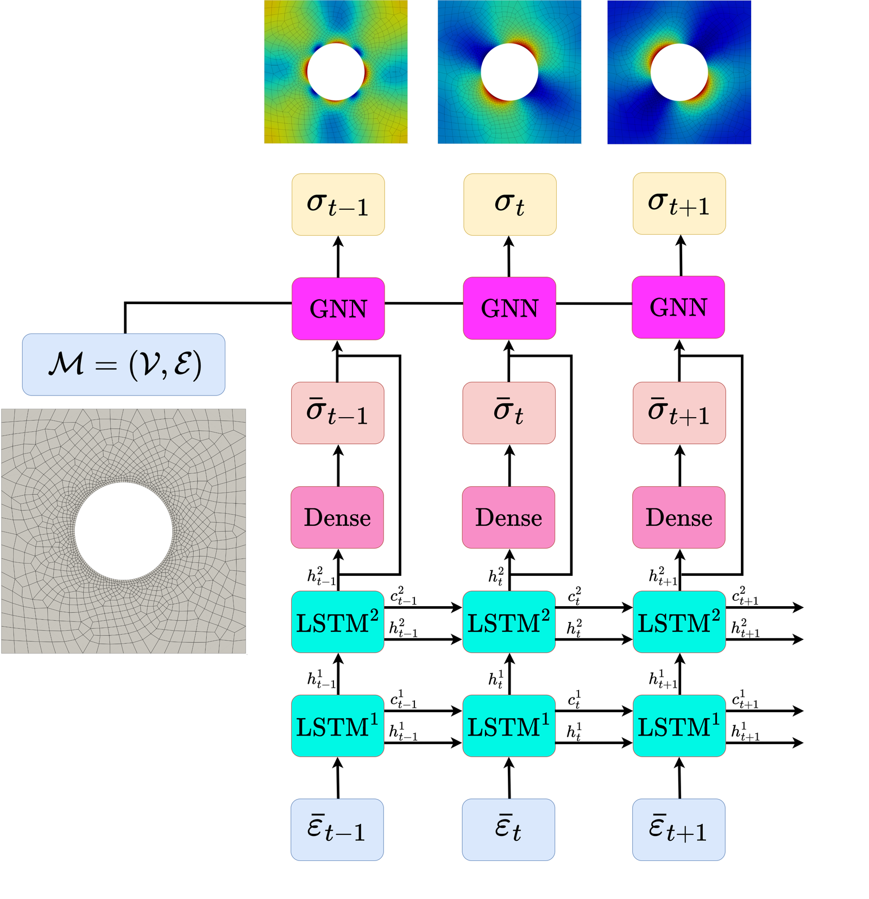
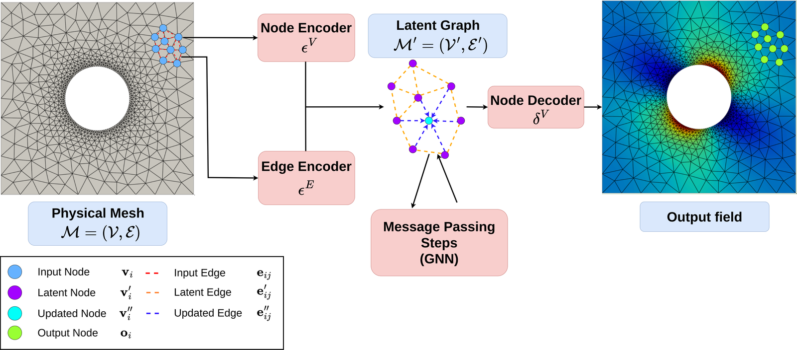
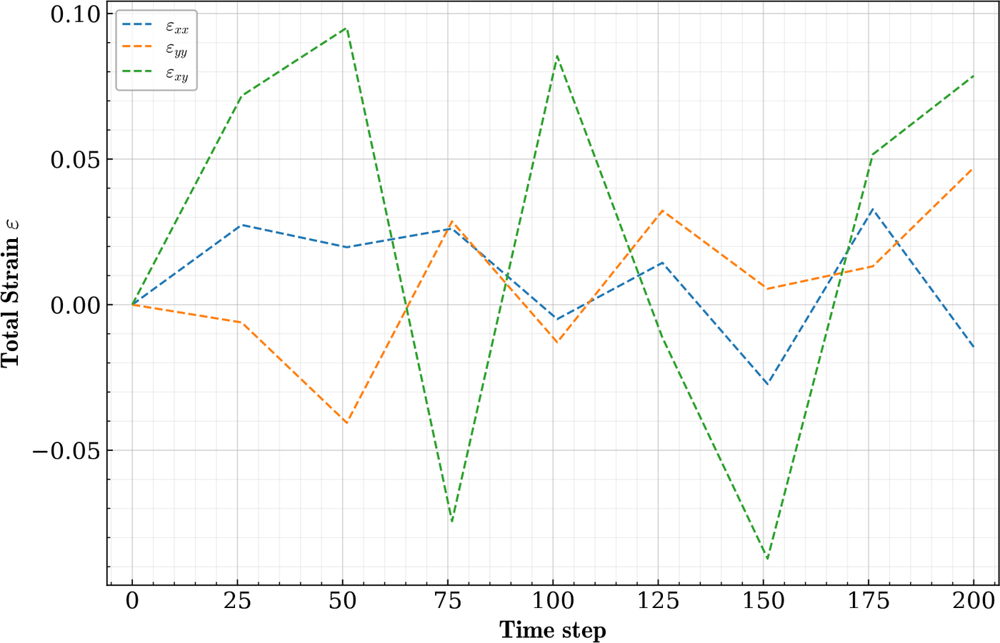
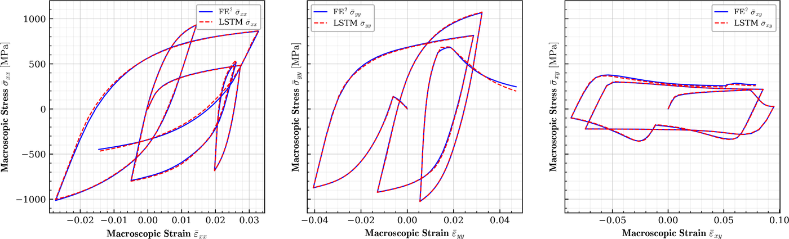
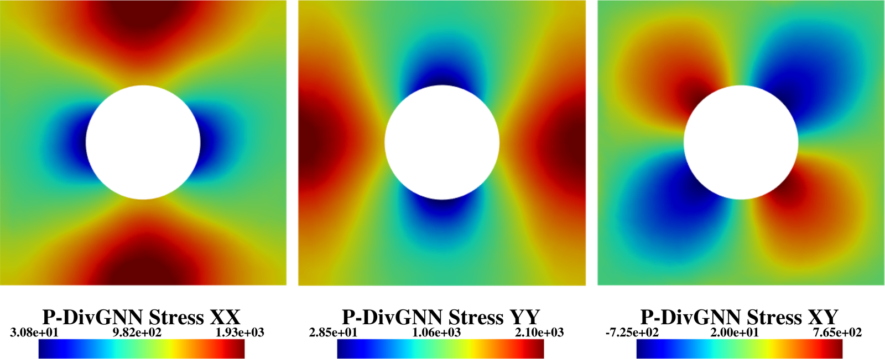
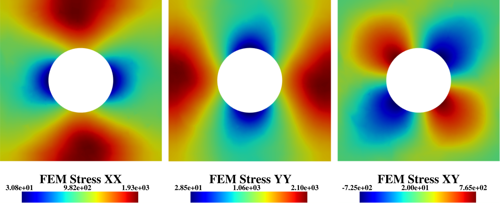
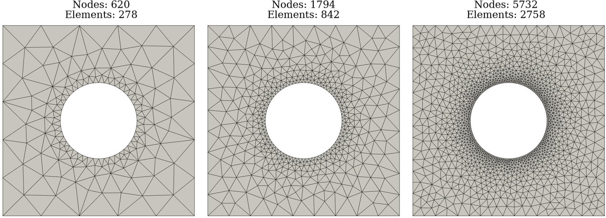

Abstract
Reconstructing local stress fields in heterogeneous microstructures under non-linear, history-dependent loading remains a major computational bottleneck in multi-scale simulations. We propose a coupled LSTM-GNN framework that links the temporal and spatial aspects of local stress field reconstruction. A Long Short-Term Memory network encodes macroscopic stress-strain sequences into a compact hidden state that captures the path-dependent constitutive response, while a physics-informed Graph Neural Network reconstructs the spatially-resolved stress field at each time step. We introduce a relative weighting strategy with linear warm-up to balance the data-driven reconstruction loss and a discrete divergence-based equilibrium penalty. This resolves the scale mismatch that prevents fixed-weight formulations from converging in the elasto-plastic regime.
The model is trained on 10,000 non-proportional loading paths applied to a periodic plate-with-a-hole microstructure and von Mises elasto-plasticity. The model achieves three orders of magnitude speedup over finite element simulations and generalizes to loading sequences twice the training length, with 1.9% cumulative error. Because the graph relies on mesh connectivity instead of the specific element type, one trained surrogate can be applied directly without retraining to meshes with different element types and to both coarser and finer resolutions, while in all cases reproducing the high-fidelity quad-element FE field used during training. Indeed, the message passing characteristics inherent to GNN and MeshGraphNet architecture render the model mesh-agnostic. Analysis of the LSTM hidden states suggests a low-dimensional structure related to the internal state variables of the constitutive model.
- Graph neural networks
- Multi-scale simulation
- Recurrent neural networks
- Machine learning
- Architectured materials
- Local stress field reconstruction
- Physics-informed neural networks
Method
The surrogate splits the problem in two. An LSTM reads the macroscopic stress-strain history and compresses it into a hidden state that encodes the path-dependent response. A graph neural network then takes that hidden state as a node feature and performs message passing over the mesh to localize the full stress field, one step at a time. A divergence-based penalty pushes the predicted field toward mechanical equilibrium.

The two networks are chained explicitly. At each step $t$, the LSTM maps the macroscopic strain and its previous hidden and cell states to the mean stress and the updated states:
The mean stress $\bar{\boldsymbol{\sigma}}_t$ and hidden state $\boldsymbol{h}_t$ are broadcast to every node and concatenated with its coordinates $\mathbf{x}_i$ and boundary label $\alpha_i$ to form the node features:
The GNN then reconstructs the three local stress components at each node of the mesh $\mathcal{M}$:
Composing the two yields a single end-to-end map from the loading history to the local stress field:

Physics-informed loss
The reconstruction is trained with a normalized mean squared error that weights each of the $d$ stress components equally:
A discrete divergence penalty drives the predicted field toward mechanical equilibrium, $\mathbf{div}(\boldsymbol{\sigma})=\mathbf{0}$, evaluated at the interior nodes:
The two terms differ by orders of magnitude, so a fixed weight fails. A relative weighting with linear warm-up keeps the physics penalty at a controlled fraction of the gradient, regardless of absolute scales:
with the warm-up $w(e) = \min(1,\, e/K)$ over $K$ epochs. We use $\lambda_{\mathrm{rel}} = 0.1$ and $K = 20$, so the penalty reaches about 10% of the total loss after warm-up.
Results
Macroscopic stress-strain response
Given an input strain path, the LSTM predicts the macroscopic stress response. On this eight-segment path — twice as long as those seen during training — it tracks the finite-element reference with 1.9% cumulative error.


FE vs. surrogate — drag to compare
Final-step stress field (σxx, σyy, σxy), shared color scale. Drag the handle: finite-element reference on the left, the surrogate on the right. Toggle which surrogate to compare against.


Divergence field
The clip plays the full loading path, showing the stress divergence for the finite-element reference, the baseline GNN, and the physics-informed P-DivGNN. The divergence penalty visibly drives the surrogate toward equilibrium.
One model, any mesh
The same trained surrogate — never retrained — is evaluated on coarse, medium and fine triangular meshes. Switch between the finite-element reference and the surrogates.

Performance
Inference time vs. mesh size
GPU neural-network inference (NVIDIA RTX A4000, 16 GB) vs. CPU finite-element solving (Intel Xeon W5-2455X). The GNN scales linearly with the number of nodes; the LSTM cost is essentially constant.
The physics-informed weighting lowers the overall NMSE from 1.68×10−2 (GNN) to 1.56×10−2 (P-DivGNN, −7%) and cuts the mean stress divergence from 893 to 440 (−51%), at an overall macroscopic wMAPE of 1.22%.
Highlights
- Trained on one mesh, the surrogate predicts high-fidelity fields on coarse meshes.
- Divergence-based physics penalty enforces equilibrium with automatic loss balancing.
- LSTM-GNN coupling predicts a single RVE in real time, up to 3,500× faster than FE.
- Accurate on loading paths twice as long as those seen during training.
Citation
M. R. Guevara Garban, Y. Chemisky, M. Clément, É. Prulière, M. Abendroth, B. Kiefer. Non-linear mechanical field reconstruction coupling recurrent neural networks with physics-informed graph neural networks. Submitted to Computer Methods in Applied Mechanics and Engineering, 2026.
@article{GuevaraGarban2026LSTMGNN,
author = {Guevara Garban, Manuel Ricardo and Chemisky, Yves and
Cl{\'e}ment, Micha{\"e}l and Pruli{\`e}re, {\'E}tienne and
Abendroth, Martin and Kiefer, Bjoern},
title = {Non-linear mechanical field reconstruction coupling recurrent
neural networks with physics-informed graph neural networks},
journal = {Computer Methods in Applied Mechanics and Engineering},
year = {2026},
note = {Submitted}
}